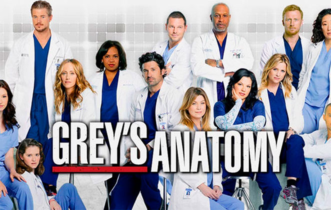
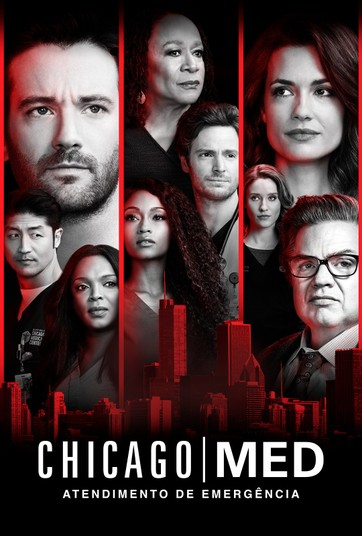

Eu sou uma pessoa que gosta muito de assistir series, esse é meu pasatempo preferido, mas nem sempre consigo assitir ate o final. As vezes a serie começa empolgante mais vai perdendo o foco ao longo dos episodios, e eu acabo perdendo o interesse, outras vezes eu começo a assitir sem interesse nenhum e a serie me surpreende e eu acabo me entretendo e não consigo mais parar de assistir.
Sou uma pessoa bem ecletica, não tenho um tipode serie favorito, gosste de series medicas, terror , ação , entre varios outro tipos.
Vou deixar aqui algumas sugestões de Series que eu assisti e gostei muito:
1° Greys´Anatomy : Sinopse: Com narração da médica Meredith Grey (Ellen Pompeo),
o drama hospitalar apresenta a vida profissional e pessoal de cirurgiões e estagiários de um hospital na cidade de Seattle

2° Chicago Med Spin-off de Chicago Fire, a série acompanha o dia-a-dia de um grupo de médicos
e enfermeiros de um hospital de Chicago. Entre eles, a Dra. Hannah Tremble (Laurie Holden),
uma fria e brilhante cirurgiã; a diretora Sharon Goodwin (S. Epatha Merkerson), que não aprova
o sistema político no qual a instituição está inserido, mas está sempre tentando ajudar os outros.

3° The Last kingdom Adaptada da série de livros de Bernard Cornwell, “Crônicas Saxônicas”, The Last Kingdom é
um drama histórico que se passa no século IX e acompanha uma Inglaterra que caiu perante as invasões Vikings.
Apenas o grande reino de Wessex continua a desafiar as probabilidades e se mantém em pé, graças ao rei Alfred. No meio deste tempo turbulento vive Uhtred,
filho de um nobre saxão que ficou órfão e foi criado pelos Vikings como um dos seus.
4° the walking dead é uma série norte-americana transmitida originalmente pelo canal AMC.
A história acompanha a vida na Terra após um apocalipse zumbi e um grupo de sobreviventes liderados pelo ex-policial, Rick Grimes,
viajam em busca de um lar seguro.

5° bridgerton Baseada no livro best-seller de Julia Quinn, Bridgerton mergulha no mundo sensual,
luxuoso e competitivo da alta sociedade londrina do início do século 19
KARINA SOUZA